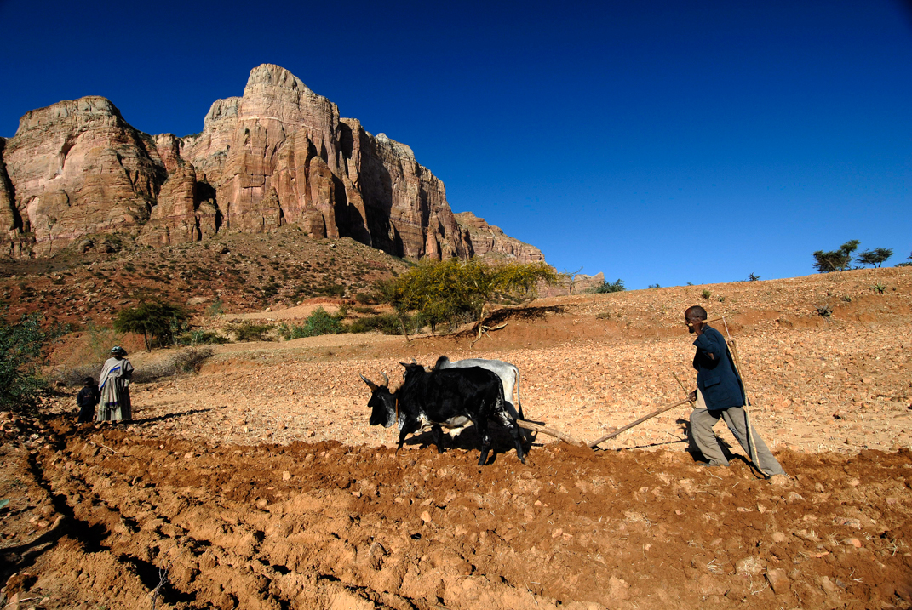
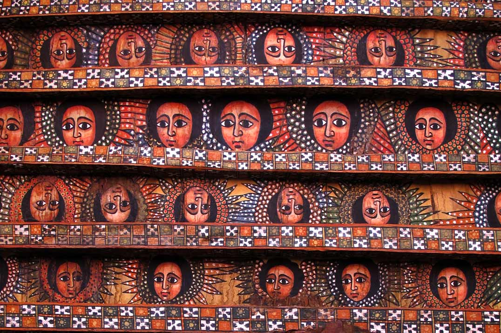
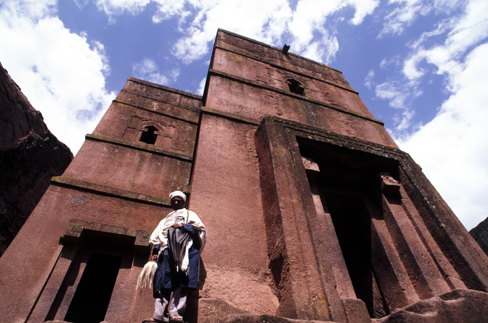
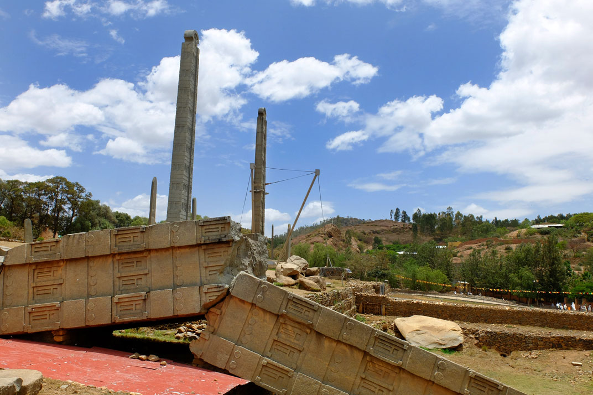
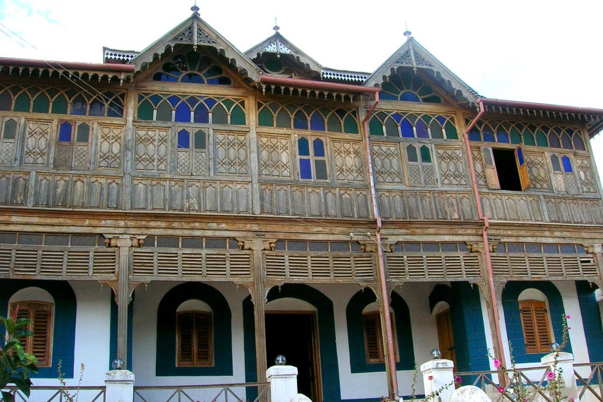
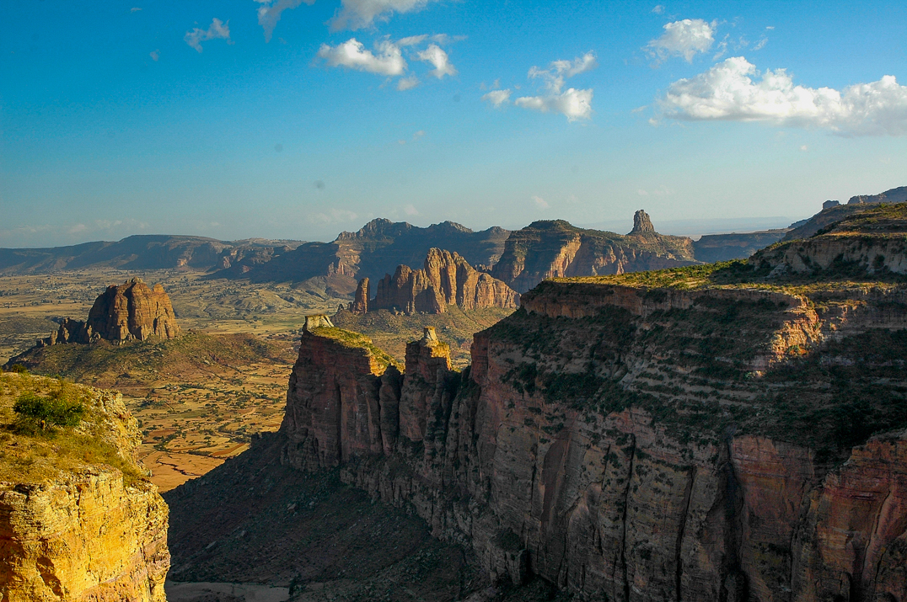
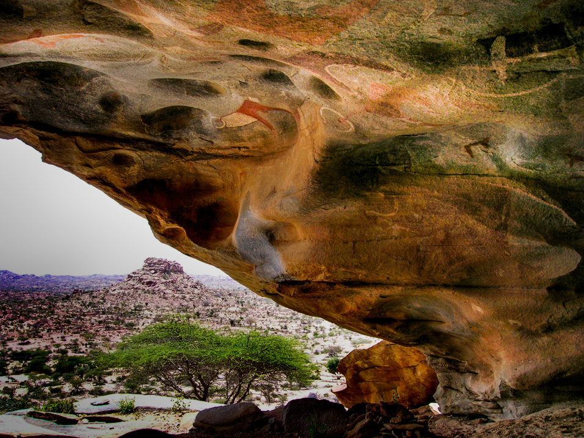
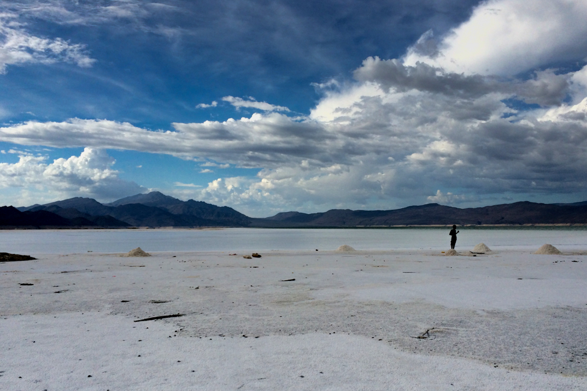

Places
A land with strong identity
The world looks different when viewed from a mountain plateau at 2,500 metres above sea level: the landscape appears almost upside-down. Since ancient times, this land has been known as a place [...]

Bahir Dar and lake Tana
Bahir Dar, "the gate to the sea", is a pleasant city on the bank of lake Tana, where, according to the local tradition, the source of the Blue Nile is located. Lake [...]

Gondar
Gondar, "the city of castles", located on a mountain 2,300 metres above sea level in the north of the country, is considered the Camelot of Africa. In 18th century Emperor Fasiladas choose [...]

Lalibela
In the province of Lasta, the ancient village of Roha took the name of the Emperor Lalibela (1181-1221), whose name literally means “The Gods Recognise You As King”. It was he who [...]

Aksum
The legend of Aksum began around the time of King Solomon (950 B.C.). It tells of a young woman named Makeda who destroyed the serpent that had long kept the city of [...]

Simien Mountains National Park
Simien in Amharic means “north” and indeed this mountainous massif is located in the north of the Ethiopian plateau. It reaches a peak of 4,460 metres above sea level with the Ras [...]

Harar
Located to the east of the country on a branch of the Ethiopian plateau, Harar has always been the heart of Muslim Ethiopia and is quite dissimilar to the rest of the [...]

Bale Mountains National Park
The Bale massif and its national park are located on the Ethiopian plateau and reach a height of 4,000 metres above sea level. The area of the park is divided into two [...]

Southern Ethiopia
The Ethiopian mountain plateau slopes towards the south, crossed by the enormous Rift Valley. The Rift Valley is essentially a huge crack in the earth, extending from the Middle East to Mozambique. [...]

Western Ethiopia
To the west, the mountain plateau slopes towards the Sudan. Here are located the fertile regions of the great coffee plantations and the immense rain forests, which are inhabited by the colubus [...]

Tigray
The region of Tigray has a landscape with big mountains with flat top and walls almost vertical, called "Ambe". With its churches, among the oldest in Ethiopia, it is a real discovery: [...]

Somaliland
The Republic of Somaliland is located in the Horn of Africa and borders onto Djibouti, Ethiopia and Somalia. It was proclaimed an independent republic in 1991, but to date is recognised as [...]

Danakil desert
The Danakil Desert is located between the Ethiopian plateau and the Red Sea. The salt plain near Dallol is the lowest part at 116 metres below sea level. In prehistoric times, the [...]

Djibouti
The Republic of Djibouti is located between the Tropic of Cancer and the Equator. Its position at the end of the Red Sea and the beginning of the Gulf of Aden has [...]